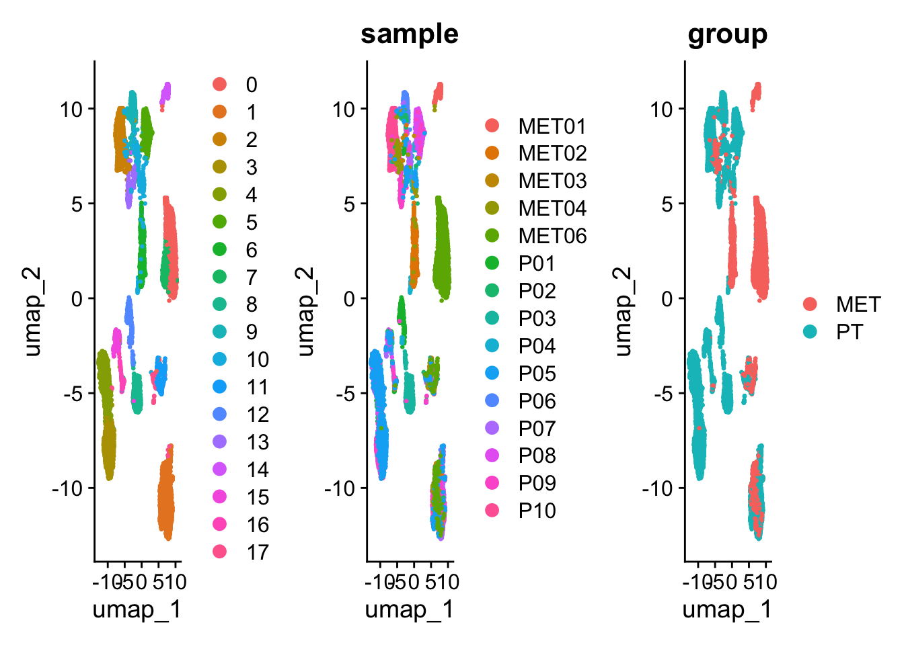
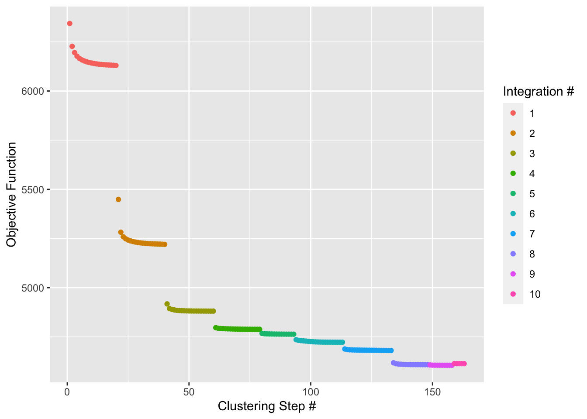
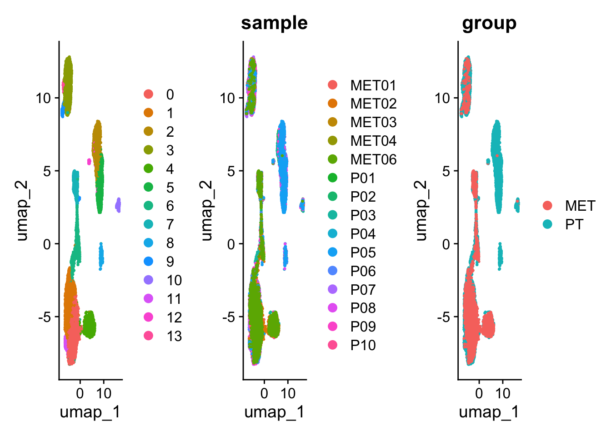
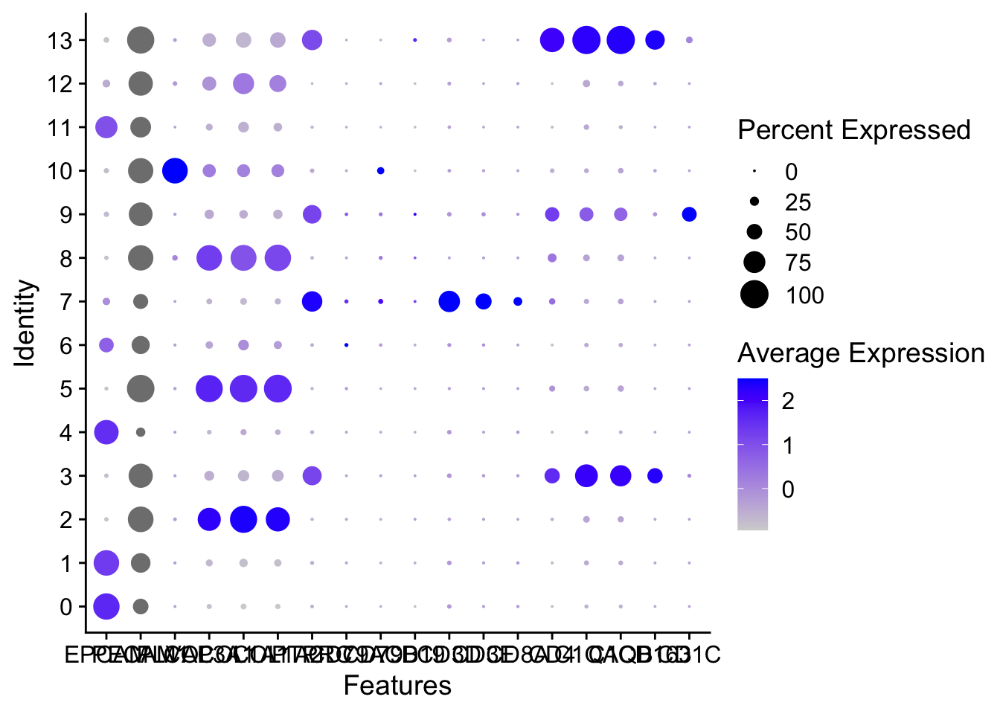
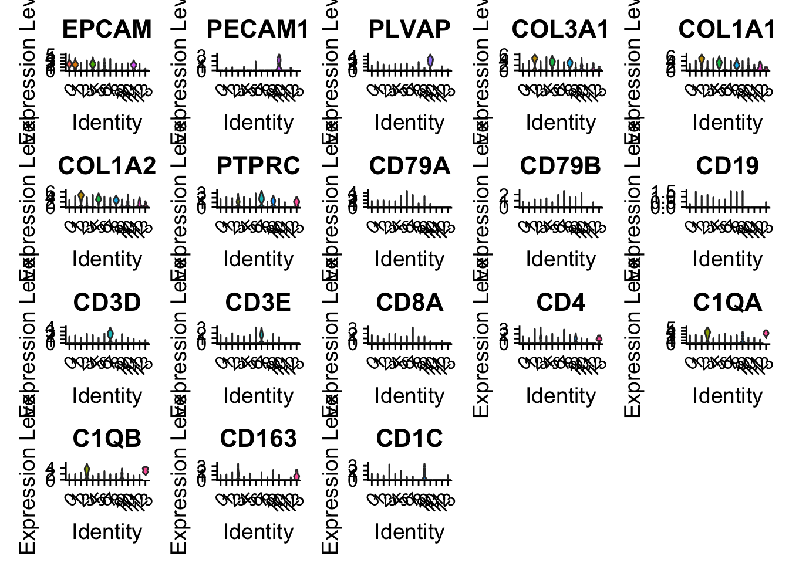
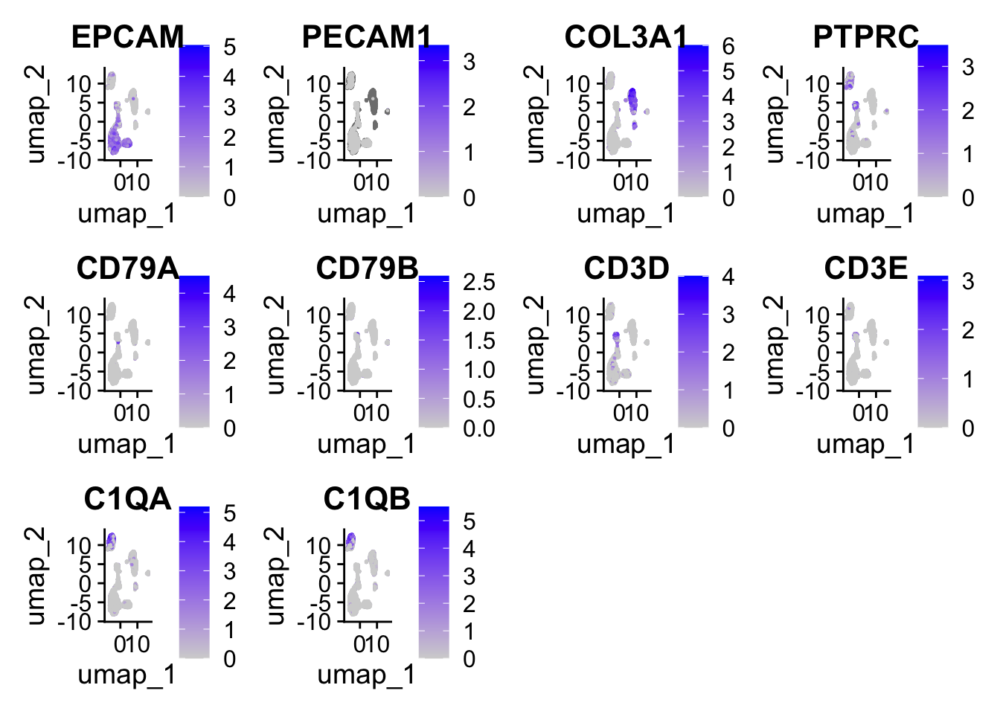
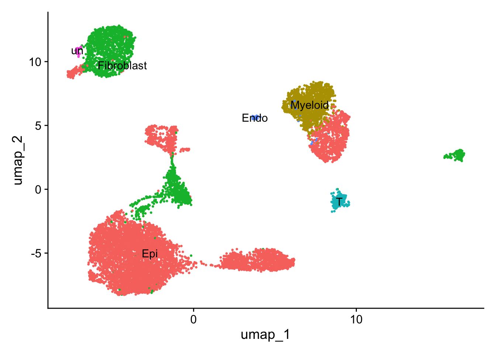
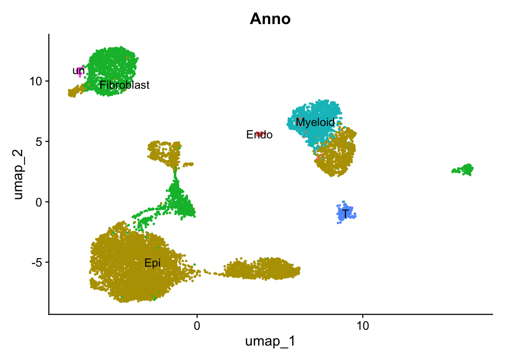

![]()
# Load packages
library(Seurat)
## Loading required package: SeuratObject
## Loading required package: sp
##
## Attaching package: 'SeuratObject'
## The following object is masked from 'package:base':
##
## intersect
library(harmony)
## Loading required package: Rcpp
library(Matrix)
library(tidyverse)
## ── Attaching core tidyverse packages ──────────────────────── tidyverse 2.0.0 ──
## ✔ dplyr 1.1.4 ✔ readr 2.1.4
## ✔ forcats 1.0.0 ✔ stringr 1.5.1
## ✔ ggplot2 3.4.4 ✔ tibble 3.2.1
## ✔ lubridate 1.9.3 ✔ tidyr 1.3.0
## ✔ purrr 1.0.2
## ── Conflicts ────────────────────────────────────────── tidyverse_conflicts() ──
## ✖ tidyr::expand() masks Matrix::expand()
## ✖ dplyr::filter() masks stats::filter()
## ✖ dplyr::lag() masks stats::lag()
## ✖ tidyr::pack() masks Matrix::pack()
## ✖ tidyr::unpack() masks Matrix::unpack()
## ℹ Use the conflicted package (<http://conflicted.r-lib.org/>) to force all conflicts to become errors
library(here)
## here() starts at /Users/zhonggr/Library/CloudStorage/OneDrive-Personal/quarto
library(httpgd)Packages
Retrieve data
- The source data is from Single-cell transcriptome analysis of tumor and stromal compartments of pancreatic ductal adenocarcinoma primary tumors and metastatic lesions
- Down load data GSE154778_RAW.tar from here to data and unzip it.
- Preprocess sequencing data
# Change working directory
setwd("./learn/2023_scRNA_Seurat/data/GSE154778_RAW/")
# getwd()
# Check files
fs <- list.files("./", "^GSM")
# Get the sample names
samples <- str_split(fs, "_", simplify = TRUE)[, 2]
unique(samples)
# Create folders for each sample, and rename
lapply(
unique(samples), function(x) {
y <- fs[grepl(x, fs)]
folder <- paste(str_split(y[1], "_", simplify = TRUE)[, 2], collapse = "")
dir.create(folder, recursive = TRUE)
file.rename(y[1], file.path(folder, "barcodes.tsv.gz"))
# Note the seurat version to check features.tsv.gz or genes.tsv.gz
file.rename(y[2], file.path(folder, "features.tsv.gz"))
file.rename(y[3], file.path(folder, "matrix.mtx.gz"))
}
)Load batch data
# Change working directory
setwd("./learn/2023_scRNA_Seurat/data/GSE154778_RAW/")
folders <- list.files("./")
folders
sceList <- lapply(
folders, function(folder) {
CreateSeuratObject(counts = Read10X(folder), project = folder)
}
)Merage samples data
Directly merge
# Use Seurat merge
sce.all <- merge(
x = sceList[[1]],
y = c(sceList[[2]], sceList[[3]], sceList[[4]], sceList[[5]], sceList[[6]],
sceList[[7]], sceList[[8]], sceList[[9]], sceList[[10]], sceList[[11]],
sceList[[12]], sceList[[13]], sceList[[14]], sceList[[5]], sceList[[16]]),
## Sample names
add.cell.ids = folders,
project = "scRNA"
)
saveRDS(sce.all, here("learn", "2023_scRNA_Seurat", "sce.all.rds"))Filter
sce.all <- readRDS(here("learn", "2023_scRNA_Seurat", "sce.all.rds"))
head(sce.all@meta.data)
## orig.ident nCount_RNA nFeature_RNA
## K16733_AAACATACTCGTTT-1 K16733 2464 965
## K16733_AAACCGTGGGTAGG-1 K16733 689 336
## K16733_AAAGCAGAACGTTG-1 K16733 7145 1919
## K16733_AAAGCAGACTGAGT-1 K16733 1655 621
## K16733_AAAGGCCTGCTCCT-1 K16733 14272 2771
## K16733_AAATACTGTGGATC-1 K16733 13832 2541
table(sce.all@meta.data$orig.ident)
##
## K16733 T10 T2 T3 T4 T5 T6 T8 T9 Y00006 Y00008
## 585 1570 837 1026 1826 769 1098 1139 898 786 533
## Y00013 Y00014 Y00016 Y00027
## 745 526 272 2484
# Mitochandrial genes
sce.all[["percent.mt"]] <- PercentageFeatureSet(sce.all, pattern = "^MT-")
# Ribonucleoprotein
sce.all[["percent.rp"]] <- PercentageFeatureSet(sce.all, pattern = "^RP")
# Specific gene set
HB.genes <- c("HBA1","HBA2","HBB","HBD","HBE1","HBG1","HBG2","HBM","HBQ1","HBZ")
# Red blood cells genes
sce.all[["percent.HB"]]<-PercentageFeatureSet(sce.all, features = HB.genes)
head(sce.all@meta.data)
## orig.ident nCount_RNA nFeature_RNA percent.mt
## K16733_AAACATACTCGTTT-1 K16733 2464 965 12.6623377
## K16733_AAACCGTGGGTAGG-1 K16733 689 336 2.1770682
## K16733_AAAGCAGAACGTTG-1 K16733 7145 1919 2.4492652
## K16733_AAAGCAGACTGAGT-1 K16733 1655 621 2.1752266
## K16733_AAAGGCCTGCTCCT-1 K16733 14272 2771 1.5414798
## K16733_AAATACTGTGGATC-1 K16733 13832 2541 0.3181029
## percent.rp percent.HB
## K16733_AAACATACTCGTTT-1 13.35227 0
## K16733_AAACCGTGGGTAGG-1 29.02758 0
## K16733_AAAGCAGAACGTTG-1 36.72498 0
## K16733_AAAGCAGACTGAGT-1 35.52870 0
## K16733_AAAGGCCTGCTCCT-1 38.81026 0
## K16733_AAATACTGTGGATC-1 40.73164 0Seurat workflow
sce <- NormalizeData(sce)
## Normalizing layer: counts.1
## Normalizing layer: counts.2
## Normalizing layer: counts.3
## Normalizing layer: counts.4
## Normalizing layer: counts.5
## Normalizing layer: counts.6
## Normalizing layer: counts.7
## Normalizing layer: counts.8
## Normalizing layer: counts.9
## Normalizing layer: counts.10
## Normalizing layer: counts.11
## Normalizing layer: counts.12
## Normalizing layer: counts.13
## Normalizing layer: counts.14
## Normalizing layer: counts.15
## Normalizing layer: counts.16
sce <- FindVariableFeatures(sce, selection.method = "vst", nfeatures = 2000)
## Finding variable features for layer counts.1
## Finding variable features for layer counts.2
## Finding variable features for layer counts.3
## Finding variable features for layer counts.4
## Finding variable features for layer counts.5
## Finding variable features for layer counts.6
## Finding variable features for layer counts.7
## Finding variable features for layer counts.8
## Finding variable features for layer counts.9
## Finding variable features for layer counts.10
## Finding variable features for layer counts.11
## Finding variable features for layer counts.12
## Finding variable features for layer counts.13
## Finding variable features for layer counts.14
## Finding variable features for layer counts.15
## Finding variable features for layer counts.16
all.genes <- rownames(sce)
sce <- ScaleData(sce, features = all.genes)
## Centering and scaling data matrix
sce <- RunPCA(sce, npcs = 50)
## PC_ 1
## Positive: KRT19, KRT8, KRT18, SMIM22, MAL2, SPINT2, TSPAN8, CLDN4, GPRC5A, PERP
## C19orf33, ELF3, TM4SF1, TMC5, LSR, LGALS4, NQO1, TACSTD2, CLDN7, SPINK1
## MUC1, C12orf75, GPX2, TSPAN1, ERBB3, SFTA2, MMP7, CYP3A5, CDH1, TMPRSS4
## Negative: VIM, COL1A2, BGN, COL1A1, SERPINF1, FN1, C1R, MGP, CTHRC1, TAGLN
## PMP22, NUPR1, THY1, FBLN1, RARRES2, TIMP3, MXRA8, TCF4, CLEC11A, INHBA
## RAB31, CCDC80, ASPN, THBS2, APOD, ISLR, TUBA1A, FSTL1, ANTXR1, MEG3
## PC_ 2
## Positive: LAPTM5, AIF1, SRGN, LST1, HLA-DPA1, HLA-DRA, HLA-DPB1, MS4A6A, HLA-DQA1, MS4A7
## HLA-DQB1, C1orf162, OLR1, HLA-DRB1, CD53, CD74, CYBB, FCGR2A, CLEC7A, ALOX5AP
## CD37, ITGB2, CD14, CD83, MS4A4A, IFI30, RGS1, RNASE6, CD86, HLA-DQA2
## Negative: BGN, C1R, TPM1, COL1A1, RARRES2, COL1A2, NBL1, MXRA8, CTHRC1, FSTL1
## THY1, FBLN1, CCDC80, IGFBP4, TAGLN, NNMT, THBS2, MGP, ASPN, TIMP3
## ISLR, MEG3, APOD, EFEMP2, MFGE8, DKK3, SPON2, FBN1, ANTXR1, EMILIN1
## PC_ 3
## Positive: CTSE, VSIG2, AGR3, FOS, MUC5AC, CYSTM1, ATF3, JUN, FOSB, ELF3
## RHOB, LINC01133, IER3, CAPN8, NEAT1, KLF6, TFF3, MUC1, DUSP1, EGR1
## BACE2, PIGR, KLF4, KLF2, CREB3L1, REG4, EDN1, HSPA1B, PLAC8, ZG16B
## Negative: TUBA1B, TOP2A, MKI67, PTTG1, UBE2C, H2AFZ, CENPW, TPX2, HMGB2, CDK1
## STMN1, RRM2, RBP1, ASPM, KLK6, PRC1, HMGB1, ATAD2, NUSAP1, GTSE1
## CDKN3, KIF20B, CEP55, HMMR, DTYMK, CDCA3, CLSPN, CENPU, CCNB1, UBE2T
## PC_ 4
## Positive: MDK, TMEM176B, COL11A1, NBL1, TMEM176A, FAM3C, LYZ, INHBA, THBS2, C1QTNF3
## GCNT3, GPNMB, FBLN1, KLK6, RARRES2, IGFL2, COL8A1, C12orf75, FNDC1, MMP7
## GREM1, PERP, NTM, CLDN3, GJB2, COMP, ISLR, CXCL14, MEG3, RBP1
## Negative: PLVAP, RAMP2, VWF, ECSCR, AQP1, CDH5, CALCRL, BCAM, RAMP3, NOTCH4
## CLDN5, MMRN2, FAM167B, ADAMTS9, EMCN, CD34, CD93, STC1, CYYR1, GPR4
## S1PR1, ANGPT2, PODXL, MYCT1, ARHGAP29, RGS5, CRIP2, ROBO4, GJA4, HIGD1B
## PC_ 5
## Positive: TOP2A, UBE2C, ATAD2, NUCKS1, PRC1, STMN1, SLPI, GTSE1, CENPW, HMGB1
## TPX2, CTSD, RAD51AP1, PLAT, CDK1, RRM2, DTYMK, CLSPN, ANLN, MYBL2
## FAM83A, CCNB1, NUSAP1, CENPU, ASPM, UBE2T, PRR11, MKI67, CEP55, CRIP2
## Negative: CD3D, CD2, PTPRCAP, CD7, C12orf75, CCL5, CD3G, RBP1, GCNT3, CD27
## KLRB1, LTB, ZFAS1, CA12, GZMM, RHOH, SPINK1, VNN1, ICOS, CLDN3
## CYTIP, TIGIT, PTPN7, GZMB, CDHR2, RUNX3, SLC7A11, CCR7, CD8A, FAM3C
sce <- FindNeighbors(sce, dims = 1:30)
## Computing nearest neighbor graph
## Computing SNN
sce <- FindClusters(sce, resolution = 0.5)
## Modularity Optimizer version 1.3.0 by Ludo Waltman and Nees Jan van Eck
##
## Number of nodes: 11914
## Number of edges: 436451
##
## Running Louvain algorithm...
## Maximum modularity in 10 random starts: 0.9419
## Number of communities: 18
## Elapsed time: 1 seconds
sce <- RunUMAP(sce, dims = 1:30)
## 15:18:03 UMAP embedding parameters a = 0.9922 b = 1.112
## 15:18:03 Read 11914 rows and found 30 numeric columns
## 15:18:03 Using Annoy for neighbor search, n_neighbors = 30
## 15:18:03 Building Annoy index with metric = cosine, n_trees = 50
## 0% 10 20 30 40 50 60 70 80 90 100%
## [----|----|----|----|----|----|----|----|----|----|
## **************************************************|
## 15:18:03 Writing NN index file to temp file /var/folders/2c/9q3pg2295195bp3gnrgbzrg40000gn/T//RtmpjzstFL/file2afb9bffbb
## 15:18:03 Searching Annoy index using 1 thread, search_k = 3000
## 15:18:05 Annoy recall = 100%
## 15:18:05 Commencing smooth kNN distance calibration using 1 thread with target n_neighbors = 30
## 15:18:06 Initializing from normalized Laplacian + noise (using RSpectra)
## 15:18:06 Commencing optimization for 200 epochs, with 492128 positive edges
## 15:18:10 Optimization finished
# sce <- RunTSNE(sce, dims = 1:30)UMAP
# Rename sample
sce@meta.data$sample[sce@meta.data$orig.ident == "K16733"] <- "P01"
sce@meta.data$sample[sce@meta.data$orig.ident == "Y00006"] <- "P02"
sce@meta.data$sample[sce@meta.data$orig.ident == "T2"] <- "P03"
sce@meta.data$sample[sce@meta.data$orig.ident == "T3"] <- "P04"
sce@meta.data$sample[sce@meta.data$orig.ident == "T4"] <- "P05"
sce@meta.data$sample[sce@meta.data$orig.ident == "T5"] <- "P06"
sce@meta.data$sample[sce@meta.data$orig.ident == "T6"] <- "P07"
sce@meta.data$sample[sce@meta.data$orig.ident == "T8"] <- "P08"
sce@meta.data$sample[sce@meta.data$orig.ident == "T9"] <- "P09"
sce@meta.data$sample[sce@meta.data$orig.ident == "T10"] <- "P10"
sce@meta.data$sample[sce@meta.data$orig.ident == "Y00008"] <- "MET01"
sce@meta.data$sample[sce@meta.data$orig.ident == "Y00013"] <- "MET02"
sce@meta.data$sample[sce@meta.data$orig.ident == "Y00014"] <- "MET03"
sce@meta.data$sample[sce@meta.data$orig.ident == "Y00016"] <- "MET04"
sce@meta.data$sample[sce@meta.data$orig.ident == "Y00019"] <- "MET05"
sce@meta.data$sample[sce@meta.data$orig.ident == "Y00027"] <- "MET06"
# Add group information
sce@meta.data$group <- ifelse( grepl("MET",sce@meta.data$sample ) ,"MET" ,"PT" )# Global
p1 <- DimPlot(
sce, reduction = "umap", pt.size=0.5, label = F,repel = TRUE
)
# Sample
p2 <- DimPlot(
sce, reduction = "umap",group.by = "sample", pt.size=0.5, label = F,
repel = TRUE
)
# group
p3 <- DimPlot(
sce, reduction = "umap",group.by = "group", pt.size=0.5, label = F,
repel = TRUE
)
p1 + p2 +p3
Harmony to remove batch effect
sce2 <- sce |> RunHarmony("sample", plot_convergence = TRUE)
## Transposing data matrix
## Initializing state using k-means centroids initialization
## Harmony 1/10
## Harmony 2/10
## Harmony 3/10
## Harmony 4/10
## Harmony 5/10
## Harmony 6/10
## Harmony 7/10
## Harmony 8/10
## Harmony 9/10
## Harmony 10/10
## Harmony converged after 10 iterations
sce2
## An object of class Seurat
## 51911 features across 11914 samples within 1 assay
## Active assay: RNA (51911 features, 2000 variable features)
## 33 layers present: counts.1, counts.2, counts.3, counts.4, counts.5, counts.6, counts.7, counts.8, counts.9, counts.10, counts.11, counts.12, counts.13, counts.14, counts.15, counts.16, data.1, data.2, data.3, data.4, data.5, data.6, data.7, data.8, data.9, data.10, data.11, data.12, data.13, data.14, data.15, data.16, scale.data
## 3 dimensional reductions calculated: pca, umap, harmony
# Same workflow
sce2 <- sce2 |>
RunUMAP(reduction = "harmony", dims = 1:30) |>
FindNeighbors(reduction = "harmony", dims = 1:30) |>
FindClusters(resolution = 0.5) |>
identity()
## 15:19:42 UMAP embedding parameters a = 0.9922 b = 1.112
## 15:19:42 Read 11914 rows and found 30 numeric columns
## 15:19:42 Using Annoy for neighbor search, n_neighbors = 30
## 15:19:42 Building Annoy index with metric = cosine, n_trees = 50
## 0% 10 20 30 40 50 60 70 80 90 100%
## [----|----|----|----|----|----|----|----|----|----|
## **************************************************|
## 15:19:42 Writing NN index file to temp file /var/folders/2c/9q3pg2295195bp3gnrgbzrg40000gn/T//RtmpjzstFL/file2afb17134535
## 15:19:42 Searching Annoy index using 1 thread, search_k = 3000
## 15:19:44 Annoy recall = 100%
## 15:19:45 Commencing smooth kNN distance calibration using 1 thread with target n_neighbors = 30
## 15:19:45 Initializing from normalized Laplacian + noise (using RSpectra)
## 15:19:46 Commencing optimization for 200 epochs, with 516614 positive edges
## 15:19:50 Optimization finished
## Computing nearest neighbor graph
## Computing SNN
## Modularity Optimizer version 1.3.0 by Ludo Waltman and Nees Jan van Eck
##
## Number of nodes: 11914
## Number of edges: 465972
##
## Running Louvain algorithm...
## Maximum modularity in 10 random starts: 0.9043
## Number of communities: 14
## Elapsed time: 1 seconds
p11 <- DimPlot(sce2, reduction = "umap", pt.size=0.5, label = F,repel = TRUE)
p22 <- DimPlot(sce2, reduction = "umap",group.by = "sample", pt.size=0.5, label = F,repel = TRUE)
p33 <- DimPlot(sce2, reduction = "umap",group.by = "group", pt.size=0.5, label = F,repel = TRUE)
p11 + p22 +p33
Visualize marker genes
Marker <- list(
Epi = c("EPCAM"),
Endo = c("PECAM1","PLVAP"),
Fibroblast = c("COL3A1","COL1A1","COL1A2"),
IM = c("PTPRC"),
B = c("CD79A","CD79B","CD19"),
T = c("CD3D","CD3E","CD8A","CD4"),
Myeloid = c("C1QA","C1QB","CD163","CD1C")
)
Marker2 = c(
"EPCAM",
"PECAM1","PLVAP",
"COL3A1","COL1A1","COL1A2",
'PTPRC',
"CD79A","CD79B","CD19",
"CD3D","CD3E","CD8A","CD4",
"C1QA","C1QB","CD163","CD1C"
)DotPlot(sce2, features = Marker2, group.by = "RNA_snn_res.0.5")
VlnPlot(sce2, features = Marker2, pt.size = 0, ncol = 5)
FeaturePlot(
sce2,
features = c(
"EPCAM", "PECAM1", "COL3A1", 'PTPRC',
"CD79A", "CD79B", "CD3D", "CD3E", "C1QA", "C1QB"
)
)
Annotate clusters
Using Vector
new.cluster.ids <- c(
'Epi','Epi','Myeloid','Fibroblast','Epi','Epi','Fibroblast','Epi','T','Epi','Fibroblast','Epi','Endo','un','Epi','Epi','Fibroblast','un','Fibroblast'
)
names(new.cluster.ids) <- levels(sce2)
sce2 <- RenameIdents(sce2, new.cluster.ids)
# Add to metadata, for
sce2@meta.data$new.cluster.ids <- Idents(sce2)
DimPlot(sce2, reduction = "umap", label = TRUE, pt.size = 0.5) + NoLegend()
Directly assign
Idents(sce2) <- "seurat_clusters"
sce2 <- RenameIdents(sce2,
"0" = "Epi",
"1" = "Epi",
"2" = "Myeloid",
"3" = "Fibroblast",
"4" = "Epi",
"5" = "Epi",
"6" = "Fibroblast",
"7" = "Epi",
"8" = "T",
"9" = "Epi",
"10" = "Fibroblast",
"11" = "Epi",
"12" = "Endo",
"13" = "un",
"14" = "Epi",
"15" = "Epi",
"16" = "Fibroblast",
"17" = "un",
"18" = "Fibroblast"
)
sce2@meta.data$celltype <- Idents(sce2)
DimPlot(sce2, reduction = "umap",label = TRUE, pt.size = 0.5) +
NoLegend()
Add annotation to meta data
sce2$Anno <- "NA"
celltype <- c(
'Epi', 'Epi', 'Myeloid', 'Fibroblast', 'Epi', 'Epi', 'Fibroblast', 'Epi', 'T', 'Epi', 'Fibroblast', 'Epi', 'Endo', 'un', 'Epi', 'Epi', 'Fibroblast', 'un', 'Fibroblast'
)
# Note:cluster start from 0
# For loop to add
sub_length <- length(unique(sce2$seurat_clusters)) - 1
for (i in 0:sub_length) {
sce2$Anno[sce2$seurat_clusters == i] = celltype[i + 1]
}
# UMAP
DimPlot(
sce2, reduction = "umap", group.by = 'Anno', label = TRUE, pt.size = 0.5) +
NoLegend()

head(sce2@meta.data)
## orig.ident nCount_RNA nFeature_RNA percent.mt
## K16733_AAACATACTCGTTT-1 K16733 2464 965 12.6623377
## K16733_AAAGCAGAACGTTG-1 K16733 7145 1919 2.4492652
## K16733_AAAGCAGACTGAGT-1 K16733 1655 621 2.1752266
## K16733_AAAGGCCTGCTCCT-1 K16733 14272 2771 1.5414798
## K16733_AAATACTGTGGATC-1 K16733 13832 2541 0.3181029
## K16733_AAATTCGAGACGAG-1 K16733 4207 1183 0.1188495
## percent.rp percent.HB RNA_snn_res.0.5 seurat_clusters
## K16733_AAACATACTCGTTT-1 13.35227 0 11 11
## K16733_AAAGCAGAACGTTG-1 36.72498 0 5 5
## K16733_AAAGCAGACTGAGT-1 35.52870 0 2 2
## K16733_AAAGGCCTGCTCCT-1 38.81026 0 2 2
## K16733_AAATACTGTGGATC-1 40.73164 0 2 2
## K16733_AAATTCGAGACGAG-1 42.33420 0 6 6
## sample group new.cluster.ids celltype Anno
## K16733_AAACATACTCGTTT-1 P01 PT Epi Epi Epi
## K16733_AAAGCAGAACGTTG-1 P01 PT Epi Epi Epi
## K16733_AAAGCAGACTGAGT-1 P01 PT Myeloid Myeloid Myeloid
## K16733_AAAGGCCTGCTCCT-1 P01 PT Myeloid Myeloid Myeloid
## K16733_AAATACTGTGGATC-1 P01 PT Myeloid Myeloid Myeloid
## K16733_AAATTCGAGACGAG-1 P01 PT Fibroblast Fibroblast Fibroblast
# save(sce2, here("learn", "2023_scRNA", "sce.anno.RData"))